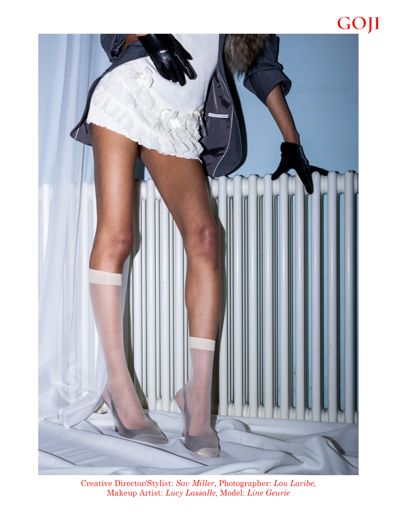
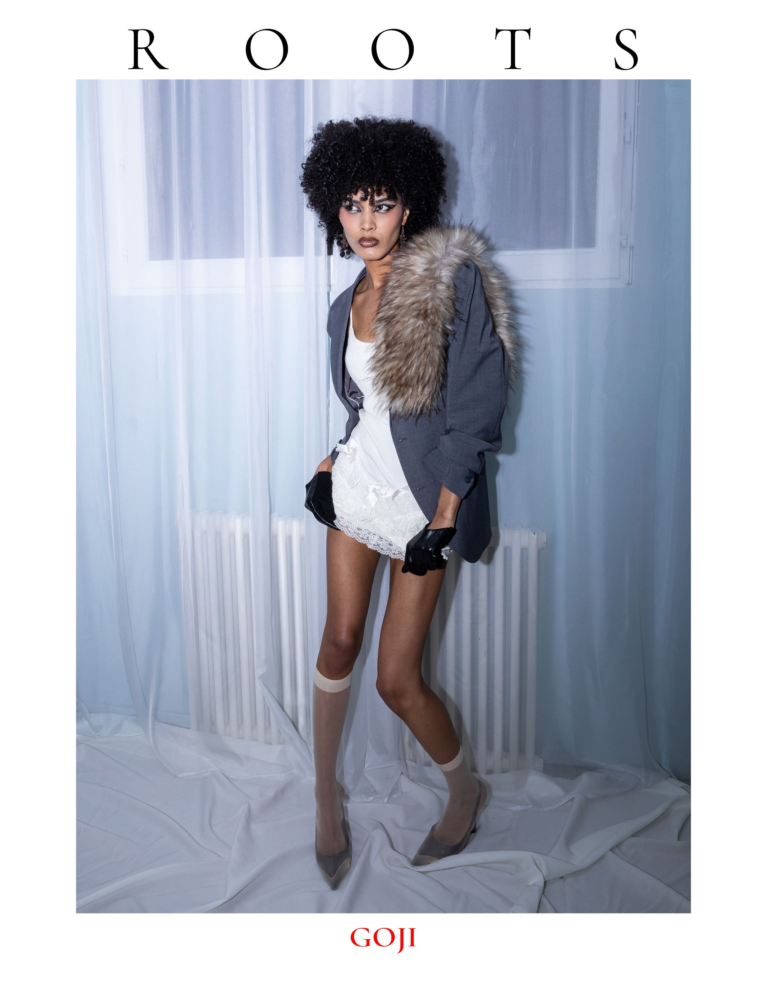

Editorial Series
Goji Roots Signal
Rhythm, vibration and visual resonance. A series built like a pulse between image, styling and printed matter.
Editorial Series
Rhythm, vibration and visual resonance. A series built like a pulse between image, styling and printed matter.


